Basic component#
Resistors#
Resistors are passive electrical components used in circuits to control the flow of electric current by providing resistance. The resistance is measured in ohms (Ω) and is symbolized by the Greek letter omega (Ω).
Symbols in Circuit Diagrams#
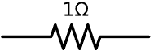
import schemdraw
import schemdraw.elements as elm
d = schemdraw.Drawing()
R = d.add(elm.Resistor().right())
d.draw()
Key Characteristics of Resistors:#
Resistance Value: This is the amount of resistance the resistor provides, typically marked on the component using color codes or numerical values.
Power Rating: Indicates the maximum power the resistor can dissipate without being damaged, usually specified in watts (W).
Tolerance: The precision of the resistor’s resistance value, often given as a percentage (e.g., ±5%).
Applications of Resistors:#
Voltage Division: Using a resistor network to create a specific voltage output from a higher voltage source.
Current Limiting: Protecting components by limiting the current flowing through a circuit.
Biasing: Setting operating points for active devices like transistors.
Pull-up/Pull-down: Ensuring a known state for digital circuits by connecting to a voltage supply or ground.
Linear and Non-Linear Resistor#
Resistors can be classified into linear and non-linear types based on how their resistance changes with the applied voltage and current.
Linear Resistors:#
Linear resistors have a constant resistance value regardless of the voltage or current passing through them. The current-voltage (I-V) relationship for a linear resistor follows Ohm’s Law, which states:
\( V = IR \)
where:
\( V \) is the voltage across the resistor.
\( I \) is the current through the resistor.
\( R \) is the resistance.
In a graph of voltage versus current, linear resistors produce a straight line with a slope equal to the resistance, passing through the origin.
Non-Linear Resistors:#
Non-linear resistors have a resistance that changes with the applied voltage or current. The I-V relationship for non-linear resistors does not follow a straight line, meaning the resistance varies under different conditions. Examples of non-linear resistors include:
Thermistors:
Negative Temperature Coefficient (NTC) Thermistors: Resistance decreases as temperature increases.
Positive Temperature Coefficient (PTC) Thermistors: Resistance increases as temperature increases.
Varistors (Voltage-Dependent Resistors, VDRs):
Resistance decreases as the voltage increases, commonly used for voltage surge protection.
Diodes:
Although primarily used for directing current, they have a non-linear resistance characteristic in their forward and reverse bias conditions.
Light-Dependent Resistors (LDRs):
Resistance decreases as the intensity of incident light increases, used in light-sensing applications.
Thermistor#
Symbols in Circuit Diagrams
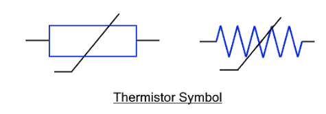
and the real world
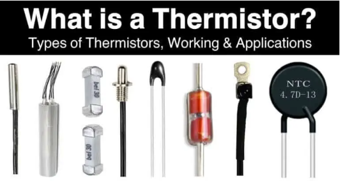
Charactristic of PTC#
Positive Temperature Coefficient (PTC) resistors have the characteristic that their resistance increases as the temperature increases.
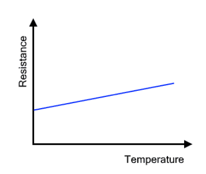
Varistors#
Varistors are nonlinear electronic component designed to protect electrical circuits from excessive voltage surges or transients.
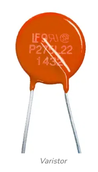
They are voltage-dependent resistors with the following characteristics:
Voltage Clamping: They protect circuits by clamping voltage spikes and surges, thus preventing damage to electronic components. Non-linear Resistance: The resistance of a varistor decreases significantly as the voltage across it increases.
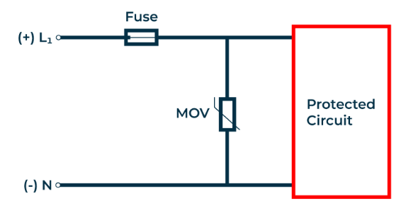
It protects because of the following characteristic of the varistor: if the voltage exceeds the threshold, the resistance of the varistor decreases, causing the circuit to be protected. This happens because the current exceeds a safe level, operate the fuse, or it prevents the current cannot pass through the main circuit.
Light Dependent Resistor (LDR)#
The Light-dependent resistors made with photosensitive. They are placed in a Zig-Zag shape as you can see in the pic below. A transparent coating is applied on the top so that the zig-zag-shaped photosensitive material gets protected and as the coating is transparent the LDR will be able to capture light from the outer environment for its working. Their resistance decreases as the light intensity increases.
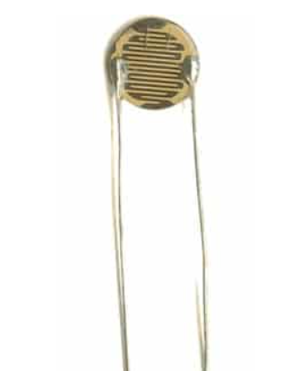
Difference Between Photodiode and LDR The photodiodes are semiconductor devices and work on PN junctions and have quick response.
Example Circuit
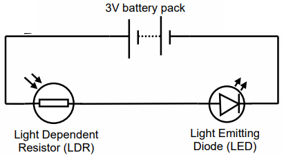
Diode#
import schemdraw
import schemdraw.elements as elm
d = schemdraw.Drawing()
R = d.add(elm.Resistor().right())
Q = d.add(elm.Diode().down().length(6))
d.add(elm.SourceV().endpoints(Q.end, R.start))
d.draw()
For the mini-project, conduct a DC sweep analysis of the characteristic curve of a diode. Complete and execute the following code or a similar version.#
Capacitors#
Capacitors are passive electrical components used in circuits to store and release electrical energy. They consist of two conductive plates separated by an insulating material called a dielectric. The ability of a capacitor to store charge is measured in farads (F), symbolized by the letter “F”.
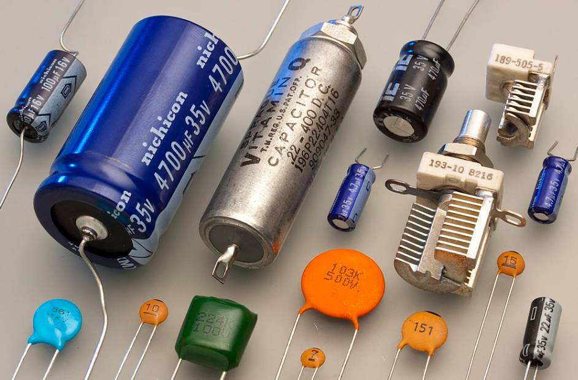
A conventional capacitor stores electric energy by charge separation between two plates. The charge stored depends on the plate size, dielectric properties, and separation distance. The capacitance \(C\) is given by:
where:
\( \varepsilon \) is the dielectric permittivity.
\( A \) is the plate area.
\( d \) is the plate separation.
Capacitance increases with larger plates and higher permittivity, and decreases with greater separation. Most industrial capacitors use this plate design.
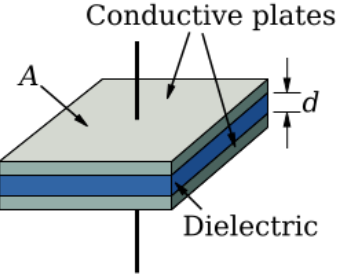
Key Characteristics of Capacitors:#
Capacitance Value: This is the amount of charge a capacitor can store per unit voltage, typically marked on the component using numerical values or color codes.
Voltage Rating: Indicates the maximum voltage the capacitor can handle without breaking down.
Tolerance: The precision of the capacitor’s capacitance value, often given as a percentage (e.g., ±10%).
Dielectric Material: The insulating material between the plates, which affects the capacitor’s properties and performance.
Applications of Capacitors:#
Energy Storage: Storing electrical energy for later use, such as in power supplies or flash cameras.
Filtering: Smoothing out voltage fluctuations in power supplies and signal processing.
Timing Circuits: Creating delays or setting the timing in oscillators and pulse generators.
Coupling and Decoupling: Blocking DC components while allowing AC signals to pass in signal processing circuits.
Tuning Circuits: Adjusting the frequency response in radios and other communication devices.
Linear and Non-Linear Capacitors#
Capacitors can be classified into linear and non-linear types based on how their capacitance changes with the applied voltage and frequency.
Linear Capacitors:#
Linear capacitors have a constant capacitance value regardless of the voltage or frequency applied to them. The charge-voltage (Q-V) relationship for a linear capacitor follows the equation:
where:
\( Q \) is the charge stored in the capacitor.
\( V \) is the voltage across the capacitor.
\( C \) is the capacitance.
In a graph of charge versus voltage, linear capacitors produce a straight line with a slope equal to the capacitance.
I-V Charactristic#
To derive the relationship for voltage across a capacitor in terms of current, starting from the basic capacitor equations:
The charge stored in a capacitor is given by:
\[ Q = CV \]where \( Q \) is the charge, \( C \) is the capacitance, and \( V \) is the voltage across the capacitor.
The current \( i \) through the capacitor is the rate of change of charge with respect to time:
\[ i = \frac{dQ}{dt} \]
Substitute \( Q = CV \) into the current equation:
Since \( Q = CV \), we get:
\[ i = \frac{d}{dt} (CV) \]Assuming capacitance \( C \) is constant (not changing with time), we can take it out of the derivative:
So, the voltage across a capacitor in terms of the current is:
Example with capacitor#
Calculate the voltage across a capacitor if the initial voltage is 2 volts and the current flowing through the capacitor is given by \( i(t) = 5 \sin(t) \) A. The capacitance \( C \) is \( 1 \, \text{F} \).
Solution:#
Start with the relationship:
\[ i(t) = C \frac{dV(t)}{dt} \]Given:
\[ i(t) = 5 \sin(t) \quad \text{and} \quad C = 1 \, \text{F} \]Substitute \( C \) and \( i(t) \) into the equation:
\[ 5 \sin(t) = 1 \cdot \frac{dV(t)}{dt} \]This simplifies to:
\[ \frac{dV(t)}{dt} = 5 \sin(t) \]Integrate both sides with respect to \( t \) to find \( V(t) \):
\[ V(t) = \int 5 \sin(t) \, dt \]The integral of \( \sin(t) \) is \( -\cos(t) \), so:
\[ V(t) = -5 \cos(t) + C_1 \]Use the initial condition to find the constant \( C_1 \). Given \( V(0) = 2 \) volts:
\[ 2 = -5 \cos(0) + C_1 \]Since \( \cos(0) = 1 \):
\[ 2 = -5 + C_1 \implies C_1 = 7 \]Therefore, the voltage across the capacitor as a function of time is:
\[ V(t) = -5 \cos(t) + 7 \]
Non-Linear Capacitors:#
Non-linear capacitors have a capacitance that changes with the applied voltage or frequency. The Q-V relationship for non-linear capacitors does not follow a straight line, meaning the capacitance varies under different conditions. Examples of non-linear capacitors include:
Varactor Diodes: Capacitance varies with the reverse-bias voltage, commonly used in tuning circuits.
Ceramic Capacitors (Class II and III): Capacitance changes with the applied voltage and temperature, used in various filtering and bypass applications.
Miniproject: Nonlinear Capacitor - Varactor Diode#
Complete and correct the text and excecute the following code after debuging
What is a Varactor Diode?#
A varactor diode, also known as a varicap diode or tuning diode, is a type of diode designed to exploit the voltage-dependent capacitance of a reverse-biased p-n junction. This unique characteristic makes varactor diodes invaluable in applications requiring voltage-controlled tuning, such as in RF design, voltage-controlled oscillators (VCOs), and frequency modulators.
Operating Principle:
Reverse Bias: When a varactor diode is reverse-biased, no current flows through the diode, and the depletion region width changes with the applied voltage.
Capacitance Variation: The capacitance \( C \) of the diode varies inversely with the depletion region width, which in turn varies with the reverse voltage \( V \). Mathematically, the relationship can be expressed as:
\[ C(V) = \frac{C_0}{(1 + \frac{V}{V_j})^n} \]where \( C_0 \) is the capacitance at zero bias, \( V_j \) is the junction potential, and \( n \) is a constant typically between 0.5 and 0.7.
PySpice Code Example#
import matplotlib.pyplot as plt
from PySpice.Probe.Plot import plot
from PySpice.Spice.Library import SpiceLibrary
from PySpice.Spice.Netlist import Circuit
from PySpice.Unit import *
# Load the spice library and create a circuit
spice_library = SpiceLibrary('path_to_spice_library')
circuit = Circuit('Varactor Diode Example')
# Define circuit components
circuit.include(spice_library['1N4007']) # Example diode model, replace with actual varactor model
circuit.V(1, 'Vbias', circuit.gnd, 0 @ u_V)
circuit.R(1, 'Vbias', 'N1', 1 @ u_kΩ)
circuit.D(1, 'N1', circuit.gnd, model='1N4007')
# DC sweep analysis
simulator = circuit.simulator(temperature=25, nominal_temperature=25)
analysis = simulator.dc(Vbias=slice(0, 30, 0.1))
# Extract data for plotting
voltages = []
capacitances = []
for point in analysis['Vbias']:
voltage = float(point)
capacitance = 1 / (2 * 3.14159 * 1 * float(analysis['Vbias'][point]))
voltages.append(voltage)
capacitances.append(capacitance)
# Plot the results
plt.figure()
plt.plot(voltages, capacitances)
plt.xlabel('Reverse Voltage (V)')
plt.ylabel('Capacitance (F)')
plt.title('Varactor Diode Capacitance vs. Reverse Voltage')
plt.grid()
plt.show()
import schemdraw
import schemdraw.elements as elm
d = schemdraw.Drawing()
C = d.add(elm.Capacitor().right())
d.draw()
Inductors#
Inductors are passive electrical components used in circuits to store energy in a magnetic field when electric current flows through them. They consist of a coil of wire and their ability to store energy is measured in henrys (H), symbolized by the letter “H”.
Key Characteristics of Inductors:#
Inductance Value: This is the amount of inductance the inductor provides, typically marked on the component using numerical values or color codes.
Current Rating: Indicates the maximum current the inductor can handle without saturating or being damaged.
Core Material: The material around which the coil is wound, which affects the inductor’s properties and performance.
Q Factor: Represents the quality of the inductor, indicating how efficiently it stores energy.
Applications of Inductors:#
Energy Storage: Storing energy in power supplies and DC-DC converters.
Filtering: Smoothing out current and voltage fluctuations in power supplies and signal processing.
Inductive Reactance: Creating impedance in AC circuits to limit current or shift phase.
Transformers: Transferring energy between circuits through electromagnetic induction.
Tuning Circuits: Adjusting the frequency response in radios and communication devices.
Linear and Non-Linear Inductors#
Inductors can be classified into linear and non-linear types based on how their inductance changes with the applied current and frequency.
Linear Inductors:#
Linear inductors have a constant inductance value regardless of the current or frequency applied to them. The voltage-current (V-I) relationship for a linear inductor follows the equation:
where:
\( V \) is the voltage across the inductor.
\( I \) is the current through the inductor.
\( L \) is the inductance.
\(\frac{dI}{dt}\) is the rate of change of current.
In a graph of voltage versus the rate of change of current, linear inductors produce a straight line with a slope equal to the inductance.
Non-Linear Inductors:#
Non-linear inductors have an inductance that changes with the applied current or frequency. The V-I relationship for non-linear inductors does not follow a straight line, meaning the inductance varies under different conditions. Examples of non-linear inductors include:
Ferrite Core Inductors: Inductance changes with the level of current due to the magnetic properties of the ferrite core.
Saturable Reactors: Inductance decreases as the core material saturates with high levels of current, used in voltage regulation and power control.
Visualizing an Inductor in a Circuit#
This diagram shows an inductor connected to a voltage source, illustrating its role in storing and releasing energy within the circuit.
import schemdraw
import schemdraw.elements as elm
d = schemdraw.Drawing()
L = d.add(elm.Inductor().right())
d.draw()

Complete the mini-project on inductors#
Including
both linear and nonlinear inductors with detailed explanations.
provide code examples using PySpice.
Example Capacior and Inductor#
We will use a simple circuit where both capacitor and inductor are driven by a pulse source through a limiting current resistor.
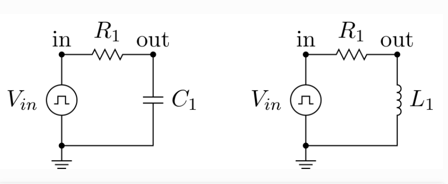
import numpy as np
import matplotlib.pyplot as plt
import PySpice.Logging.Logging as Logging
logger = Logging.setup_logging()
from PySpice.Probe.Plot import plot
from PySpice.Spice.Netlist import Circuit
from PySpice.Unit import *
from scipy.optimize import curve_fit
# Warning: the capacitor/inductor return current in the generator
# could use switches instead
# Fixme: for loop makes difficult to intermix code and text !
figure, (ax1, ax2) = plt.subplots(2, figsize=(20, 10))
element_types = ('capacitor', 'inductor')
for element_type in ('capacitor', 'inductor'):
circuit = Circuit(element_type.title())
# Fixme: compute value
source = circuit.PulseVoltageSource('input', 'in', circuit.gnd,
initial_value=0@u_V, pulsed_value=10@u_V,
pulse_width=10@u_ms, period=20@u_ms)
circuit.R(1, 'in', 'out', 1@u_kΩ)
if element_type == 'capacitor':
element = circuit.C
value = 1@u_uF
# tau = RC = 1 ms
else:
element = circuit.L
# Fixme: force component value to an Unit instance ?
value = 1@u_H
# tau = L/R = 1 ms
element(1, 'out', circuit.gnd, value)
# circuit.R(2, 'out', circuit.gnd, kilo(1)) # for debug
if element_type == 'capacitor':
tau = circuit['R1'].resistance * circuit['C1'].capacitance
else:
tau = circuit['L1'].inductance / circuit['R1'].resistance
simulator = circuit.simulator(temperature=25, nominal_temperature=25)
step_time = 10@u_us
analysis = simulator.transient(step_time=step_time, end_time=source.period*3)
# Let define the theoretical output voltage.
if element_type == 'capacitor':
def out_voltage(t, tau):
# Fixme: TypeError: only length-1 arrays can be converted to Python scalars
return float(source.pulsed_value) * (1 - np.exp(-t / tau))
else:
def out_voltage(t, tau):
return float(source.pulsed_value) * np.exp(-t / tau)
# Fixme: get step_time from analysis
# At t = 5 tau, each circuit has nearly reached it steady state.
i_max = int(5 * tau / float(step_time))
popt, pcov = curve_fit(out_voltage, analysis.out.abscissa[:i_max], analysis.out[:i_max])
tau_measured = popt[0]
# Fixme: use Unit().canonise()
print('tau {0} = {1}'.format(element_type, tau.canonise().str_space()))
print('tau measured {0} = {1:.1f} ms'.format(element_type, tau_measured * 1000))
if element_type == 'capacitor':
ax = ax1
title = "Capacitor: voltage is constant"
else:
ax = ax2
title = "Inductor: current is constant"
ax.set_title(title)
ax.grid()
current_scale = 1000
ax.plot(analysis['in'])
ax.plot(analysis['out'])
# Fixme: resistor current, scale
ax.plot(((analysis['in'] - analysis.out)/circuit['R1'].resistance) * current_scale)
ax.axvline(x=float(tau), color='red')
ax.set_ylim(-11, 11)
ax.set_xlabel('t [s]')
ax.set_ylabel('[V]')
ax.legend(('Vin [V]', 'Vout [V]', 'I'), loc=(.8,.8))
#plt.tight_layout()
#plt.show()
2024-10-23 13:47:52,889 - PySpice.Spice.Netlist.Node - Netlist.WARNING - Node name 'in' is a Python keyword
---------------------------------------------------------------------------
OSError Traceback (most recent call last)
Cell In[5], line 49
46 else:
47 tau = circuit['L1'].inductance / circuit['R1'].resistance
---> 49 simulator = circuit.simulator(temperature=25, nominal_temperature=25)
50 step_time = 10@u_us
51 analysis = simulator.transient(step_time=step_time, end_time=source.period*3)
File H:\HadiSadoghiYazdi\Circuit\Lib\site-packages\PySpice\Spice\Netlist.py:1292, in Circuit.simulator(self, *args, **kwargs)
1291 def simulator(self, *args, **kwargs):
-> 1292 return CircuitSimulator.factory(self, *args, **kwargs)
File H:\HadiSadoghiYazdi\Circuit\Lib\site-packages\PySpice\Spice\Simulation.py:1167, in CircuitSimulator.factory(cls, circuit, *args, **kwargs)
1164 kwargs['parallel'] = True
1166 if sub_cls is not None:
-> 1167 return sub_cls(circuit, *args, **kwargs)
1168 else:
1169 raise ValueError('Unknown simulator type')
File H:\HadiSadoghiYazdi\Circuit\Lib\site-packages\PySpice\Spice\NgSpice\Simulation.py:99, in NgSpiceSharedCircuitSimulator.__init__(self, circuit, **kwargs)
97 ngspice_shared = kwargs.get('ngspice_shared', None)
98 if ngspice_shared is None:
---> 99 self._ngspice_shared = NgSpiceShared.new_instance()
100 else:
101 self._ngspice_shared = ngspice_shared
File H:\HadiSadoghiYazdi\Circuit\Lib\site-packages\PySpice\Spice\NgSpice\Shared.py:449, in NgSpiceShared.new_instance(cls, ngspice_id, send_data, verbose)
447 else:
448 cls._logger.debug("New instance for id {}".format(ngspice_id))
--> 449 instance = cls(ngspice_id=ngspice_id, send_data=send_data, verbose=verbose)
450 cls._instances[ngspice_id] = instance
451 return instance
File H:\HadiSadoghiYazdi\Circuit\Lib\site-packages\PySpice\Spice\NgSpice\Shared.py:479, in NgSpiceShared.__init__(self, ngspice_id, send_data, verbose)
476 self._extensions = []
478 self._library_path = None
--> 479 self._load_library(verbose)
480 self._init_ngspice(send_data)
482 self._is_running = False
File H:\HadiSadoghiYazdi\Circuit\Lib\site-packages\PySpice\Spice\NgSpice\Shared.py:539, in NgSpiceShared._load_library(self, verbose)
537 if verbose:
538 print(message)
--> 539 self._ngspice_shared = ffi.dlopen(self.library_path)
File H:\HadiSadoghiYazdi\Circuit\Lib\site-packages\cffi\api.py:150, in FFI.dlopen(self, name, flags)
147 raise TypeError("dlopen(name): name must be a file name, None, "
148 "or an already-opened 'void *' handle")
149 with self._lock:
--> 150 lib, function_cache = _make_ffi_library(self, name, flags)
151 self._function_caches.append(function_cache)
152 self._libraries.append(lib)
File H:\HadiSadoghiYazdi\Circuit\Lib\site-packages\cffi\api.py:834, in _make_ffi_library(ffi, libname, flags)
832 def _make_ffi_library(ffi, libname, flags):
833 backend = ffi._backend
--> 834 backendlib = _load_backend_lib(backend, libname, flags)
835 #
836 def accessor_function(name):
File H:\HadiSadoghiYazdi\Circuit\Lib\site-packages\cffi\api.py:829, in _load_backend_lib(backend, name, flags)
827 if first_error is not None:
828 msg = "%s. Additionally, %s" % (first_error, msg)
--> 829 raise OSError(msg)
830 return backend.load_library(path, flags)
OSError: cannot load library 'H:\HadiSadoghiYazdi\Circuit\Lib\site-packages\PySpice\Spice\NgSpice\Spice64_dll\dll-vs\ngspice.dll': error 0x7e. Additionally, ctypes.util.find_library() did not manage to locate a library called 'H:\\HadiSadoghiYazdi\\Circuit\\Lib\\site-packages\\PySpice\\Spice\\NgSpice\\Spice64_dll\\dll-vs\\ngspice.dll'